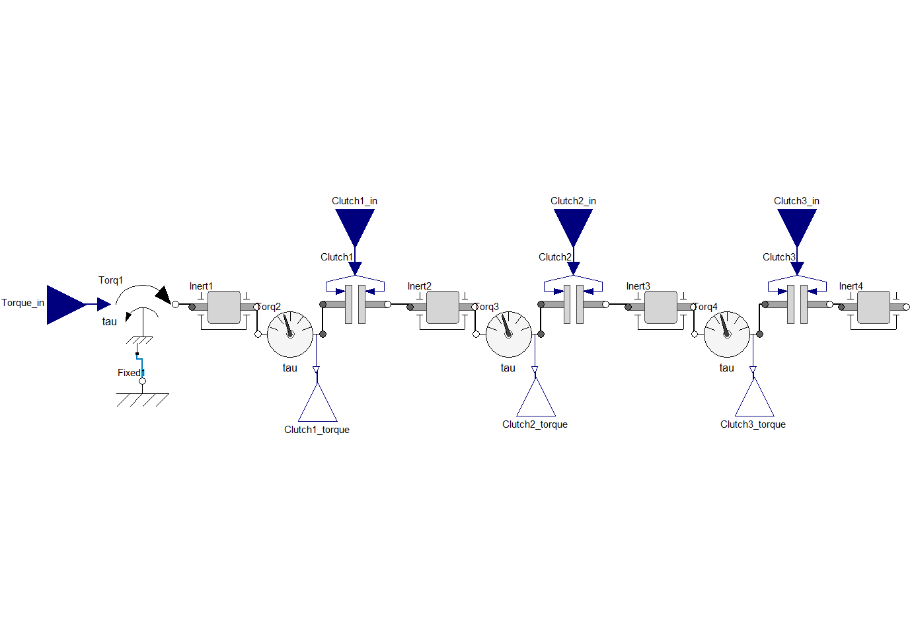

Note
Go to the end to download the full example code.
Twin evaluation#
This example shows how you can use PyTwin to load and evaluate a twin model. The model consists of three coupled clutches. It has four inputs (applied torque and the three clutch openings) and three outputs (the computed torque on each clutch).
{kind=link}
# sphinx_gallery_thumbnail_path = '_static/coupledClutches.png'
Perform required imports#
Perform required imports, which include downloading and importing the input files.
import matplotlib.pyplot as plt
import pandas as pd
from pytwin import TwinModel, download_file, load_data
twin_file = download_file("CoupledClutches_23R1_other.twin", "twin_files", force_download=True)
csv_input = download_file("CoupledClutches_input.csv", "twin_input_files", force_download=True)
twin_config = download_file("CoupledClutches_config.json", "twin_input_files", force_download=True)
Define auxiliary functions#
Define auxiliary functions for comparing and plotting the results from different simulations executed on the same twin model.
def plot_result_comparison(step_by_step_results: pd.DataFrame, batch_results: pd.DataFrame):
"""Compare the results obtained from two different simulations executed
on the same twin model. The two results datasets are provided as Pandas
dataframes. The function plots the results for all the outputs."""
pd.set_option("display.precision", 12)
pd.set_option("display.max_columns", 20)
pd.set_option("display.expand_frame_repr", False)
# Plot the runtime outputs
columns = step_by_step_results.columns[1::]
result_sets = 2 # Results from only step-by-step, batch_mode
fig, ax = plt.subplots(ncols=result_sets, nrows=len(columns), figsize=(18, 7))
if len(columns) == 1:
single_column = True
else:
single_column = False
fig.subplots_adjust(hspace=0.5)
fig.set_tight_layout({"pad": 0.0})
for ind, col_name in enumerate(columns):
# Plot runtime results
if single_column:
axes0 = ax[0]
axes1 = ax[1]
else:
axes0 = ax[ind, 0]
axes1 = ax[ind, 1]
step_by_step_results.plot(x=0, y=col_name, ax=axes0, ls=":", color="g", title="Twin Runtime - Step by Step")
axes0.legend(loc=2)
axes0.set_xlabel("Time [s]")
# Plot twin results in CSV file in batch mode
batch_results.plot(x=0, y=col_name, ax=axes1, ls="-.", color="g", title="Twin Runtime - Batch Mode")
axes1.legend(loc=2)
axes1.set_xlabel("Time [s]")
if ind > 0:
axes0.set_title("")
axes1.set_title("")
# Show plot
plt.show()
Load the twin runtime and external CSV file#
Load the twin runtime and instantiate it.
print("Loading model: {}".format(twin_file))
twin_model = TwinModel(twin_file)
twin_model.print_model_info()
twin_model_input_df = load_data(csv_input)
data_dimensions = twin_model_input_df.shape
number_of_datapoints = data_dimensions[0] - 1
Loading model: C:\Users\ansys\AppData\Local\Temp\TwinExamples\twin_files\CoupledClutches_23R1_other.twin
------------------------------------- Model Info -------------------------------------
Twin Runtime Version: 2.15.0.0
Model Name: CoupledClutchesTwin_23R1SP1
Number of outputs: 3
Number of Inputs: 4
Number of parameters: 3
Default time end: 1.5
Default step size: 0.001
Default tolerance(Integration Accuracy): 0.0001
Output names:
Name Unit ... Max Description
0 Clutch1_torque TWIN_VARPROP_NOTDEFINED ... None TWIN_VARPROP_NOTDEFINED
1 Clutch2_torque TWIN_VARPROP_NOTDEFINED ... None TWIN_VARPROP_NOTDEFINED
2 Clutch3_torque TWIN_VARPROP_NOTDEFINED ... None TWIN_VARPROP_NOTDEFINED
[3 rows x 7 columns]
Input names:
Name Unit ... Max Description
0 Clutch1_in TWIN_VARPROP_NOTDEFINED ... None TWIN_VARPROP_NOTDEFINED
1 Clutch2_in TWIN_VARPROP_NOTDEFINED ... None TWIN_VARPROP_NOTDEFINED
2 Clutch3_in TWIN_VARPROP_NOTDEFINED ... None TWIN_VARPROP_NOTDEFINED
3 Torque_in TWIN_VARPROP_NOTDEFINED ... None TWIN_VARPROP_NOTDEFINED
[4 rows x 7 columns]
Parameter names:
Name ... Description
0 solver.method ... Solver integration method (ADAMS=1, BDF=2)
1 solver.abstol ... Solver absolute tolerance
2 solver.reltol ... Solver relative tolerance
[3 rows x 7 columns]
Has TBROMs : False
Define the initial inputs of the twin model and initialize it#
Define the inputs of the twin model, initialize it, and collect the output values.
Simulate the twin in step by step mode#
Loop over all inputs, simulating the twin at each time step and collecting the corresponding output values.
sim_output_list_step = [outputs]
data_index = 0
while data_index < number_of_datapoints:
# Gets the stop time of the current simulation step
time_end = twin_model_input_df.iloc[data_index + 1][0]
step = time_end - twin_model.evaluation_time
inputs = dict()
for column in twin_model_input_df.columns[1::]:
inputs[column] = twin_model_input_df[column][data_index]
twin_model.evaluate_step_by_step(step_size=step, inputs=inputs)
outputs = [twin_model.evaluation_time]
for item in twin_model.outputs:
outputs.append(twin_model.outputs[item])
sim_output_list_step.append(outputs)
data_index += 1
results_step_pd = pd.DataFrame(sim_output_list_step, columns=["Time"] + list(twin_model.outputs), dtype=float)
Simulate the twin in batch mode#
Reset/re-initialize the twin and run the simulation in batch mode, which passes all the input data, simulates all the data points, and collects all the outputs at once.
data_index = 0
inputs = dict()
for column in twin_model_input_df.columns[1::]:
inputs[column] = twin_model_input_df[column][data_index]
twin_model.initialize_evaluation(inputs=inputs, json_config_filepath=twin_config)
outputs = [twin_model.evaluation_time]
for item in twin_model.outputs:
outputs.append(twin_model.outputs[item])
results_batch_pd = twin_model.evaluate_batch(twin_model_input_df)
Plot results#
Plot the results and save the images on disk.
plot_result_comparison(results_step_pd, results_batch_pd)
Total running time of the script: (0 minutes 6.111 seconds)